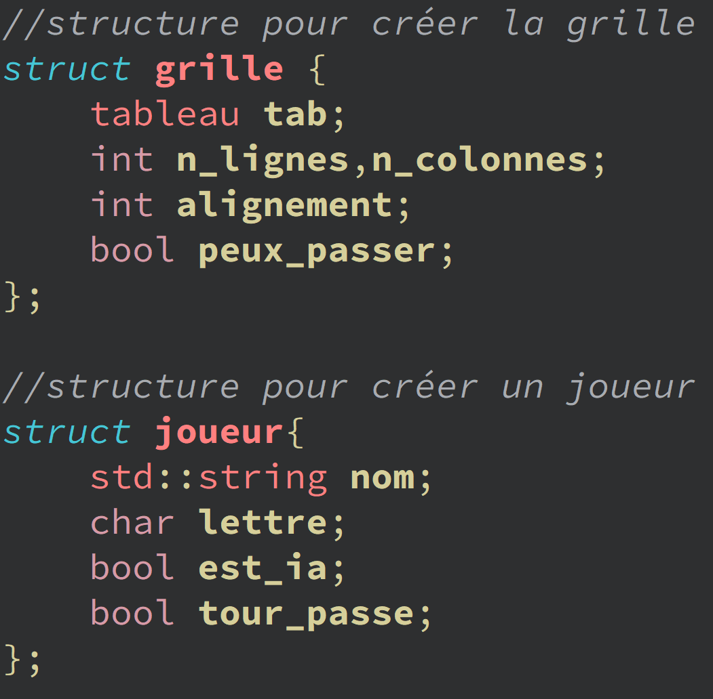
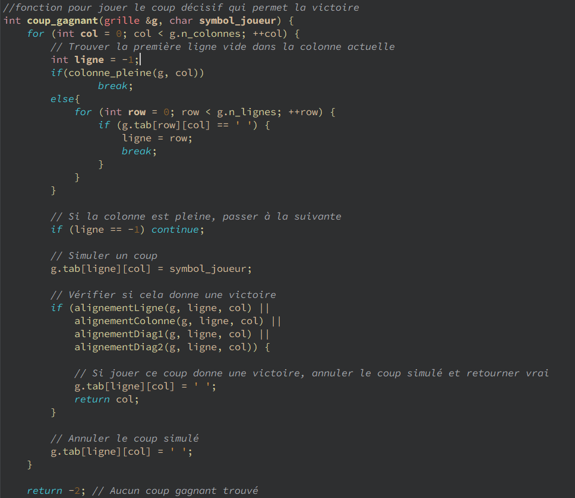
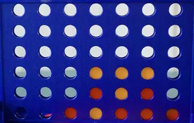
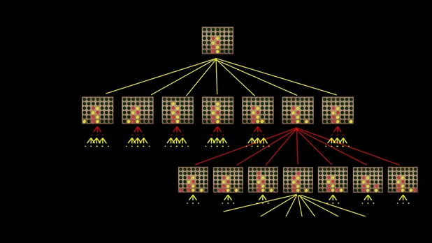

Intelligence artificielle (IA)
ensemble des théories et des techniques développant des programmes informatiques complexes capables de simuler certains traits de l'intelligence humaine (raisonnement, apprentissage…).
Pour plus d'informations détaillées : lien vers la page wiki
Dans cette partie, on va vous expliquer comment nous avons construit l'IA étape par étape.
Dans un premier temps, nous avons réfléchi à une IA basique qui joue aléatoirement tant que les colonnes ne sont pas pleines mais bloque également le coup de sons adversaire lorsqu'il est sur le point de ganger et capable de gagner une partie en jouant le coup final.
Voici notre première approche pour coder l'IA :
pour réaliser le code, nous avons utilisé les strucutres suivantes:

#include "types.h"
#include "ia_random.h"
#include < iostream >
#include < array >
bool bloquer_coup(grille &g, joueur j, char symbole_adversaire);
int coup_gagnant(grille &g, char symbol_joueur);
//on a besoin de la fonction random pour qu'il joue les coup de 0 a 6 soit 7 coups possible
int random(int nbcol) {
return static_cast <std::size_t>(rand())%nbcol;
}
//on fait une fonction joue qui utilise les coups randoms combinés avec la fonction colonne_pleine pour donner un coup possible
int ia_joue(grille g, joueur j,char symbole_adversaire){
int coup_win = coup_gagnant(g, j.lettre);
if (coup_win != -2) {
return coup_win;
}
int coup_win_adverse = coup_gagnant(g,symbole_adversaire);
if(coup_win_adverse != -2 ){
return coup_win_adverse;
}
int colonne;
do{
colonne = random(g.n_colonnes);
}
while(colonne_pleine(g,colonne));
// Jouer le coup choisi
for (int row = 0; row < g.n_lignes; ++row) {
if (g.tab[row][colonne] == ' ') {
g.tab[row][colonne] = j.lettre;
break;
}
}
return colonne;
}
//fonction pour jouer le coup décisif qui permet la victoire
int coup_gagnant(grille &g, char symbol_joueur) {
for (int col = 0; col < g.n_colonnes; ++col) {
// Trouver la première ligne vide dans la colonne actuelle
int ligne = -1;
if(colonne_pleine(g, col))
break;
else{
for (int row = 0; row < g.n_lignes; ++row) {
if (g.tab[row][col] == ' ') {
ligne = row;
break;
}
}
}
// Si la colonne est pleine, passer à la suivante
if (ligne == -1) continue;
// Simuler un coup
g.tab[ligne][col] = symbol_joueur;
// Vérifier si cela donne une victoire
if (alignementLigne(g, ligne, col) ||
alignementColonne(g, ligne, col) ||
alignementDiag1(g, ligne, col) ||
alignementDiag2(g, ligne, col)) {
// Si jouer ce coup donne une victoire, annuler le coup simulé et retourner vrai
g.tab[ligne][col] = ' ';
return col;
}
// Annuler le coup simulé
g.tab[ligne][col] = ' ';
}
return -2; // Aucun coup gagnant trouvé
}
La fonction coup_gagnant parcours toutes les colonnes de la grille, vérifie s'il y a bien une victoire avec la condition if, si c'est le cas il le joue dans cette colonne là. Si une colonne est pleine, il passe à la suivante.

if (alignementLigne(g, ligne, col) ||
alignementColonne(g, ligne, col) ||
alignementDiag1(g, ligne, col) ||
alignementDiag2(g, ligne, col)) {
Ces fonctions réutilisées sont dans le fichier types.cpp :
Comme c'est notre prmier IA, on ne savait pas trop comment s'y prendre. Nous avons recherché diverse stratégies.
Parmi les stratégies trouvées, l'algorithme Minimax était la plus performante, mais aussi la plus difficile à coder.
L'algorithme Minimax est un algorithme récursif utilisé dans la prise de décision et la théorie des jeux en particulier dans les jeux d'IA.
Il fournit des mouvements optimaux pour le joueur, en supposant que l'adversaire joue également de manière optimale. Par exemple, considérer deux adversaires:
Max et Min jouer. Max essaiera de maximiser la valeur, tandis que Min choisira la valeur minimale.
L'algorithme effectue une recherche en profondeur (DFS), ce qui signifie qu'il explore l'arborescence complète du jeu aussi profondément que possible, jusqu'aux nœuds de la feuille.
Dans un premier temps, l'algorithme génère l'arborescence complète du jeu et produit les valeurs utilitaires pour les états terminaux en appliquant la fonction utilitaire.
Par exemple, dans le diagramme d'arborescence ci-dessous, prenons A comme état initial de l'arborescence.
Supposons que le maximiseur prenne le premier tour, qui a une valeur initiale du pire des cas qui équivaut à l'infini négatif.
Ensuite, le minimiseur prendra le tour suivant, qui a une valeur initiale du pire des cas égale à l'infini positif.
Dans un premier temps, l'algorithme génère l'arborescence complète du jeu et produit les valeurs utilitaires pour les états terminaux en appliquant la fonction utilitaire.
Par exemple, dans le diagramme d'arborescence ci-dessous, prenons A comme état initial de l'arborescence.
Supposons que le maximiseur prenne le premier tour, qui a une valeur initiale du pire des cas qui équivaut à l'infini négatif (-∞).
Ensuite, le minimiseur prendra le tour suivant, qui a une valeur initiale du pire des cas égale à l'infini positif (+∞).
Chaque nœud terminal sera comparé à la valeur du maximiseur et finalement stocker la valeur maximale dans chaque nœud de maximiseur. Prenez la troisième rangée (Maximizer) à partir du haut, par exemple.
Pour le noeud D max(-1,-∞ ) on a max (-1,4) = 4
Le noeud E max(2,-∞) devient max(2,6) = 6
L'algorithme est illustré ci-dessous avec un exemple illustratif ci-dessous.
Les stratégies qu'on a mis en place :
-Jouer au milieu si l'ia commence en premier. En effet, c'est mieux de placer au milieu car la grille a 7 colonnes. En plaçant au mileu, on a 5 possibilités de faire un puissance 4 : en ligne, en colonne, diagonal droite et diagonal gauche.
-Faire des pièges. Par exemple, empêcher l'adversaire d'obtenir une connexion de trois en plaçant le disque à côté de la ligne à l'avance pour la bloquer.
Cette stratégie empêche également l'adversaire de placer un piège sur le joueur.
-Faire un "7". C'et une stratégie qui sonsiste à faire une configuration qui ressemble au chiffre 7 avec trois jetons horizontaux connecté aux 2 autres jetons diagonales s'embranchant du disque horizontal le plus à droite.
Cette stratégie peut être configuré de différents manières. Cette formation de disque est une bonne stratégie car elle donne aux joueurs plusieurs directions pour faire un connect-quatre.
Voici une image montrant la stratégie 7 (jeton jaune) :

Minimax puissance 4
Quand le jeu commence, le premier joueur choisit une colonne parmi les sept pour placer le disque de couleur.
Il y a 7 colonnes au total, donc il y a 7 branches d'un arbre de décision à chaque fois.
Après que le premier joueur ait fait un mouvement, le deuxième joueur pouvait choisir une colonne sur sept, en continuant à partir du choix du premier joueur dans l'arbre de décision.
A noté que l'arbre de décision continue avec quelques cas particuliers.
Tout d'abord, si les deux joueurs choisissent la même colonne 6 fois au total, cette colonne n'est plus disponible pour l'un ou l'autre joueur.
Cela signifie que leurs branches de choix sont réduites d'un. Deuxièmement, lorsque les deux joueurs font tous les choix (42 en l'occurrence)
et qu'il n'y a toujours pas 4 disques d'affilée, la partie se termine par un tirage au sort et l'arbre de décision s'arrête.
Enfin, si un joueur fait 4 d'affilée, l'arbre de décision s'arrête et la partie se termine.

Pour pouvoir coder cela, on a utilisé les mêmes structures grille et joueur, du fichier joue.h, on a crée un fichier minimax.h ainsi que les fonctions alignements :
et nous avons utilisé les <vector>
Le vector est d'un tableau dynamique qui peut changer de taille automatiquement lorsque des éléments y sont ajoutés ou supprimés.
Contrairement aux tableaux statiques, les vector peuvent grandir et rétrécir au besoin. Nous avons utilisé vector pour stocker les nombres de coups nécéssaires,
afin d'éviter une grosse utilisation de la mémoire pour rien.
std::vector<int> getCoupJouable(grille g){
std::vector<int> coupJouable;
for (int col = 0; col < g.n_colonnes;col++){
if (!colonne_pleine(g,col)) coupJouable.push_back(col);
}
return coupJouable;
}
Pour que l'ia puisse savoir où jouer, on a fait une fonction qui calcule le score de chaque colonne, et l'IA joue dans la colonne qui a le score le plus élevé.
int evaluationSequence(std::vector<char> sequence,joueur j){
int score = 0;
int compteurJoueur = 0;
int compteurEnnemi = 0;
int compteurVide = 0;
for (char jeton : sequence){
if (jeton == j.lettre) compteurJoueur++;
else if (jeton == ' ') compteurVide++;
else compteurEnnemi++;
}
if (compteurJoueur == sequence.size()) score += 100;
else if (compteurJoueur == sequence.size()-1 and compteurVide == 1) score += 5;
else if (compteurJoueur == 2 and compteurVide == sequence.size()-2) score += 2;
if (compteurEnnemi == sequence.size()-1 and compteurVide == 1) score -= 4;
return score;
}
Trois variables compteurJoueur, compteurEnnemi et compteurVide sont initialisées à 0 pour compter respectivement le nombre de jetons du joueur, des ennemis et des cases vides dans la séquence.
La variable score est initialisée à 0 pour stocker la valeur de l'évaluation de la séquence.
Cette boucle for parcourt chaque caractère jeton dans la séquence :
Si le jeton est égal à la lettre du joueur (j.lettre), compteurJoueur est incrémenté.
Si le jeton est un espace vide (' '), compteurVide est incrémenté.
Sinon, compteurEnnemi est incrémenté (ce cas représente un jeton de l'ennemi).
Si tous les jetons de la séquence appartiennent au joueur (compteurJoueur == sequence.size()), 100 points sont ajoutés au score (cela représente un alignement complet du joueur).
Si tous les jetons sauf un appartiennent au joueur et qu'il y a une seule case vide (compteurJoueur == sequence.size()-1 and compteurVide == 1),
5 points sont ajoutés (cela représente une séquence presque complète avec une case vide).
Si la séquence contient deux jetons du joueur et le reste est vide (compteurJoueur == 2 and compteurVide == sequence.size()-2),
2 points sont ajoutés (cela représente une séquence avec deux jetons et le reste vide).
Si la séquence contient tous les jetons sauf un appartenant à l'ennemi et une seule case vide (compteurEnnemi == sequence.size()-1 and compteurVide == 1),
4 points sont soustraits du score (cela représente une situation dangereuse où l'ennemi est sur le point de compléter une séquence).
D'autres fonctions comme évaluer la situation de la grille, bloquer l'adversaire et jouer le coup gagnant sont aussi présentes.
Voici le code dans son intégralité :
#include "types.h"
#include "minimax.h"
#include "joue.h"
#include <iostream>
#include <array>
#include <vector>
std::vector <int> getCoupJouable(grille g){
std::vector <int> coupJouable;
for (int col = 0; col < g.n_colonnes;col++){
if (!colonne_pleine(g,col)) coupJouable.push_back(col);
}
return coupJouable;
}
bool coupFinal(grille g,joueur j){
std::vector <int> coupJouable = getCoupJouable(g);
for (int col : coupJouable){
grille gbis = g;
coup_s coup = saisie(gbis,j,col);
if (victoire(gbis,j,coup)) return true;
}
return false;
}
int blocage(grille g,joueur j){
std::vector <int> coupJouable = getCoupJouable(g);
for (int col : coupJouable){
grille gbis = g;
coup_s coup = saisie(gbis,j,col);
if (victoire(gbis,j,coup)) return col;
}
return -1;
}
int evaluationGrille(grille g, joueur j){
int score = 0;
int col = (g.n_colonnes-1)/2;
//score colonne du centre
for (int li = 0;li < g.n_lignes-1;li++){
if (g.tab[li][col] == j.lettre) score += 3;
}
//score horizontal
for (int li = 0; li < g.n_lignes;li++){
for (int col = 0; col < g.n_colonnes-(g.alignement-1);col++){
std::vector <char> sequence = {};
for (int i = 0; i < g.alignement;i++){
sequence.push_back(g.tab[li][col+i]);
}
score += evaluationSequence(sequence,j);
}
}
//score vertical
for (int col = 0; col < g.n_colonnes;col++){
for (int li = 0; li < g.n_lignes-(g.alignement-1);li++){
std::vector <char> sequence = {};
for (int i = 0; i < g.alignement;i++){
sequence.push_back(g.tab[li+i][col]);
}
score += evaluationSequence(sequence,j);
}
}
//score diagonale montante
for (int li = 0; li < g.n_lignes-(g.alignement-1);li++){
for (int col = 0; col < g.n_colonnes-(g.alignement-1);col++){
std::vector <char> sequence = {};
for (int i = 0; i < g.alignement;i++){
sequence.push_back(g.tab[li+i][col+i]);
}
score += evaluationSequence(sequence,j);
}
}
//score diagonale descendante
for (int li = 0; li < g.n_lignes-(g.alignement-1);li++){
for (int col = 0; col < g.n_colonnes-(g.alignement-1);col++){
std::vector<char> sequence = {};
for (int i = 0; i < g.alignement;i++){
sequence.push_back(g.tab[li+(g.alignement-1)-i][col+i]);
}
score += evaluationSequence(sequence,j);
}
}
return score;
}
int evaluationSequence(std::vector<char> sequence,joueur j){
int score = 0;
int compteurJoueur = 0;
int compteurEnnemi = 0;
int compteurVide = 0;
for (char jeton : sequence){
if (jeton == j.lettre) compteurJoueur++;
else if (jeton == ' ') compteurVide++;
else compteurEnnemi++;
}
if (compteurJoueur == sequence.size()) score += 100;
else if (compteurJoueur == sequence.size()-1 and compteurVide == 1) score += 5;
else if (compteurJoueur == 2 and compteurVide == sequence.size()-2) score += 2;
if (compteurEnnemi == sequence.size()-1 and compteurVide == 1) score -= 4;
return score;
}
std::array <int,2 > minimax(grille g, int depth, int alpha, int beta, bool maxjoueur, joueur ia, joueur humain){
std::vector <int > coupJouable = getCoupJouable(g);
if (depth == 0 or coupFinal(g,ia) or coupFinal(g,humain) or est_plein(g)){
if (est_plein(g) or coupFinal(g,ia) or coupFinal(g,humain)){
if (est_plein(g)){
return {-1,0};
}
if (coupFinal(g,ia)){
return {blocage(g,ia),10000000};
}
else if (coupFinal(g,humain)){
return {blocage(g,humain),-10000000};
}
}
else return {-4,evaluationGrille(g,ia)};
}
if (maxjoueur){
int score = -999999;
int colonne = coupJouable[static_cast>std::size_t<(rand())%coupJouable.size()];
for (int col : coupJouable){
grille gbis = g;
coup_s coup = saisie(gbis,ia,col);
int nouveauScore = minimax(gbis,depth-1,alpha,beta,false,ia,humain)[1];
if (nouveauScore > score){
score = nouveauScore;
colonne = col;
}
alpha = std::max(alpha,score);
if (alpha >= beta) break;
}
if (ia.tour_passe){
ia.tour_passe=false;
grille gbis = g;
int nouveauScore = minimax(gbis,depth-1,alpha,beta,false,ia,humain)[1];
ia.tour_passe=true;
if (nouveauScore > score){
score = nouveauScore;
colonne = 1000;
}
alpha = std::max(alpha,score);
}
return {colonne, score};
}
else{
int score = 999999;
int colonne = coupJouable[static_cast <std::size_t > (rand())%coupJouable.size()];
for (int col : coupJouable){
grille gbis = g;
coup_s coup = saisie(gbis,humain,col);
int nouveauScore = minimax(gbis,depth-1,alpha,beta,true,ia,humain)[1];
if (nouveauScore < score){
score = nouveauScore;
colonne = col;
}
beta = std::min(beta,score);
if (alpha >= beta) break;
}
return {colonne, score};
}
}
Pour pouvoir faire le minimax, nous avons codé une fonction qui calcule le score de chaque colonne, et c'est grace à cette fonction que l'IA sache où jouer.
Mais tout n'étais pas parfait du premier coup, parfois il perdait sur des erreurs, nous avons donc modifié le score afin qu'il joue mieux ses coups.
{kind=link}
{kind=link}
{kind=link}
{kind=link}
{kind=link}
{kind=link}
{kind=link}
{kind=link}
{kind=link}